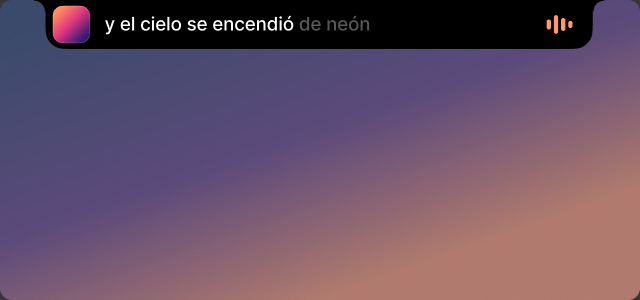
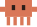

General
Comportamiento
Apariencia
Elementos

Tú decides qué aparece
Lo que desactives no entra al notch. Si no hay nada activo, se queda oculto.
Actividad

Claude CodeBuscando instalaciones…Sistema
Conexiones
Claude Code
Cuándo mostrarlo
Integración
Hooks de Claude Code
Instalados
Probar la conexiónEnvía un aviso de prueba al notch por el mismo camino que Claude Code.
Activa Claude Code en Elementos para conectarlo.